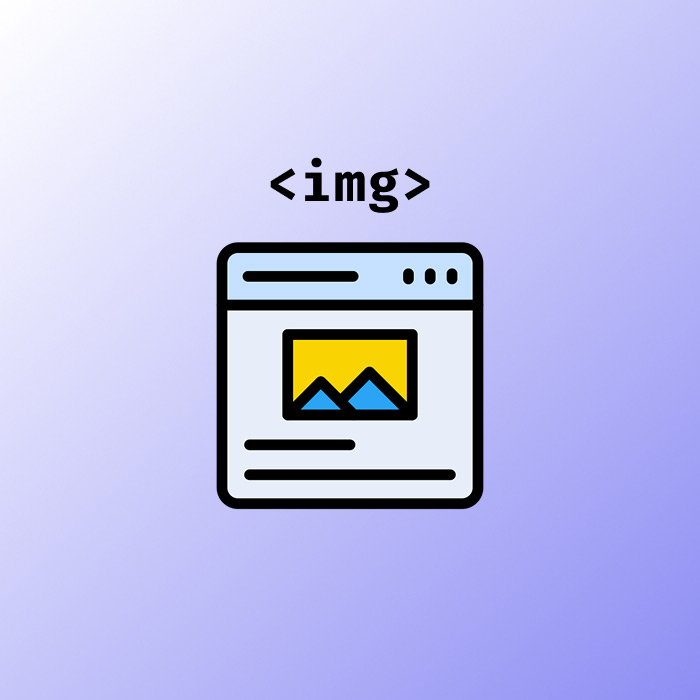

I learned the most basic things about HTML. It's a markup language, basically meaning that it organizes and gives structure to the content. It doesn't have colors or letter fonts. It uses tags (labes). You use '<' at the start of a tag and '>' at the end of it. Some examples of tags are 'h1' or 'p'. You use '/' to give it an end. 'h1' is for the main title of the page; it is recommended to use it only once on a page. 'h2' is for the subtitle; 'h3' to 'h6' are to give more sublevels of titles. The main text uses the tag 'p,' which stands for paragraph. CSS is the second language I should learn; in a nutshell, it gives the web page colors and text fonts. JavaScript is the one who gives logic to webpages. For example, if you want a button that sends you to another page, you use JavaScript to write the code, or if you want an interactive map of a city, you use JavaScript.
In order to practice what I have learned, I wrote this journal in HTML, and I might include CSS or JavaScript in the future.
An imagen in HTML is compossed by two properties (attributes). A property is a special word that goes inside of a tag to give additional information or to modify the defauth behaviour of an element.
The properties used for images are 'src' and 'alt'. To add an image, use the 'img' tag and include 'src=', followed by the path to the image. Then, add 'alt=' and provide a description of what appears in the image. This helps applications and assistive technologies understand the content of the image.
Below is an example of an image.
